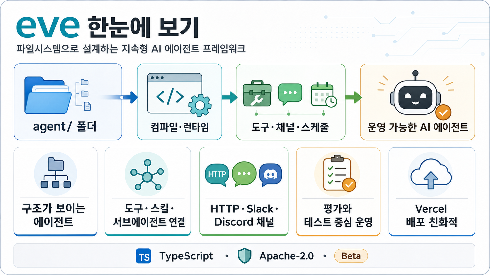

인포그래픽 크게 보기

GitHub Repository Report
eve는
에이전트를
폴더로 설계하게 합니다
The Framework for Building Agents. instructions, tools, skills, channels, schedules 같은 핵심 능력을 파일시스템 구조로 드러내 운영 가능한 AI 에이전트를 만들도록 돕는 TypeScript 프레임워크입니다.
1,376GitHub Stars
82Forks
15Open Issues
eve@0.11.6최근 릴리스
1. 이 레포가 해결하는 문제
2. 핵심 작동 흐름
agent/ 작성instructions.md, tools/, skills/, channels/ 등으로 능력 선언
경로 기반 발견파일 경로가 도구·연결·스킬 이름과 역할을 결정
컴파일·실행CLI/TUI와 런타임이 에이전트 표면을 조립
운영·평가테스트, eval, 채널, 스케줄로 실제 운영 루프 구성
3. 누구에게 유용한가
에이전트 제품 개발팀
프롬프트와 도구를 배포 가능한 소프트웨어 구조로 관리하고 싶은 팀에 적합합니다.
Vercel/TypeScript 생태계 사용자
npm, pnpm, TypeScript, 웹 프레임워크 통합에 익숙하면 도입 장벽이 낮습니다.
운영·평가 중심 팀
subagents, evals, scenario tests, 채널 연동을 통해 “작동 확인”까지 묶고 싶은 경우 유용합니다.
4. 확인된 기능 신호
5. 도입 판단
시도해볼 만한 경우
에이전트의 프롬프트·도구·채널·스케줄을 Git으로 관리하고, 구조가 눈에 보이는 방식으로 운영하려는 팀이라면 빠르게 PoC를 해볼 가치가 있습니다.
먼저 확인할 점
현재 beta 성격이 강하므로 API 안정성, 배포 환경, 모델/샌드박스 요구사항, 기존 스택과의 통합 비용을 실제 샘플 에이전트로 검증하는 것이 좋습니다.